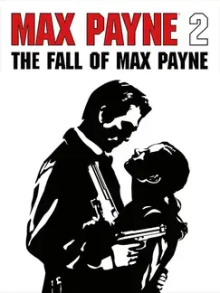

 |
|
| Tiempo de juego | 9m 52s |
| Última actividad | 11/11/2025 8:20:15 |
| Añadido | 26/4/2025 1:40:24 |
| Modificado | 10/12/2025 11:28:17 |
| Estado de finalización | Jugado |
| Librería | Playnite |
| Fuente | |
| Plataforma | PC (Windows) |
| Fecha de lanzamiento | 14/10/2003 |
| Puntuación de la Comunidad | 86 |
| Puntuación de la Crítica | 84 |
| Puntuación de usuario | |
| Género | Shooter |
| Desarrollador | Remedy Entertainment |
| Editor | Rockstar Games |
| Característica | Single Player |
| Enlaces | Official Wikia Wikipedia Steam Twitch |
| Tag | |
Vuelve el detective que lo perdió todo, todavía lidiando con los fantasmas de su pasado, solo para caer en un nuevo laberinto de conspiración y violencia en las calles oscuras de una ciudad que nunca duerme. Esta vez, sin embargo, el destino le tiene preparada una conexión inesperada, un reencuentro con una figura misteriosa y peligrosa de su pasado que se convierte en el corazón de esta nueva y trágica historia.
La acción frenética que conocías regresa, pero perfeccionada. La habilidad para manipular el tiempo se siente más fluida y poderosa que nunca, convirtiendo cada tiroteo en un espectáculo aún más dinámico y cinemático. Podés moverte con una gracia brutal, esquivando balas en cámara lenta y desatando un torbellino de destrucción controlada en enfrentamientos que son tanto tácticos como visualmente impactantes.
La narrativa mantiene el inconfundible estilo film noir y novela negra, con las icónicas viñetas de cómic y la voz interior melancólica del protagonista. Pero ahora, el foco se desplaza hacia el romance trágico, la obsesión y las complejas relaciones en medio del caos criminal. Si buscás una secuela que eleva la apuesta en la acción estilizada, profundiza en los personajes y te cuenta una historia de amor oscura e inolvidable envuelta en una atmósfera densa y cautivadora, este es un viaje que tenés que emprender.
Es una caída más profunda y melancólica en la oscuridad.